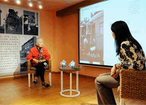
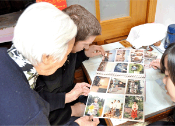

您现在的位置：首页 > 起源
起源——倾听社区的声音，我们发现需求。

“老友计划”是一个非盈利的公益行动，旨在建立弱势人群与社会人士的友谊，改变对弱势人群的态度和观念，消除沟通障碍，唤起平等真挚的社会交往，提升弱势人群的素养和参与社会交往的能力，促进社会共融。
服务人群
孤寡老人——特别是年迈的住在老式弄堂社区的孤寡、失能老人。
残障人士——特别是需要社会关爱和支持的残障、智障人士。
残障人士——特别是需要社会关爱和支持的残障、智障人士。
活动计划【老友乐相伴】——吸引青年人/爱心人士/机构进入社区，与目标服务人群一起聊天、手工、电影欣赏、运动、做点心等等，提供弱势人群精神康复和参与社会的有益活动。
【老友影像坊】——号召摄影或者摄像爱好者拿出自己的相机和技术来为那些原本没有机会拍照或者拍短片的目标服务人群留下影像记录和温情瞬间，更广泛的传播唤起全社会对此弱势人群的持续关注和关爱行动。
【老友访谈录】——号召社会上的年轻人去深 入目标服务人群的精神世界，倾听和记录他们的人生故事以及生活感悟，也提升和丰富自我的价值观和人生观，提倡代际沟通的无障碍。
